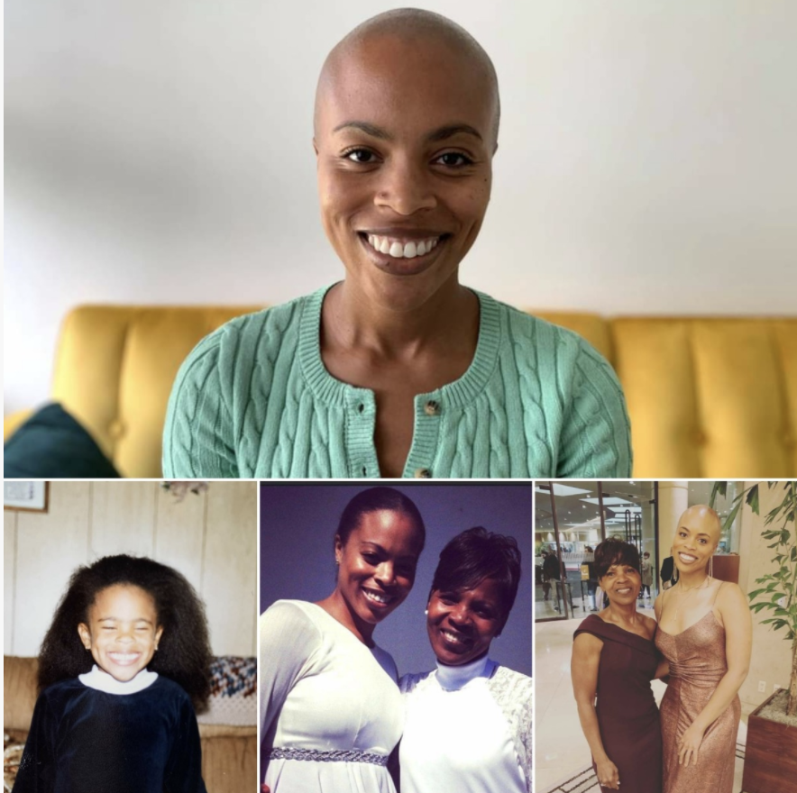

“Both of my parents had this old Puerto Rican mentality that the most important thing is your family. Even though we lived in the housing projects, I never realized that we didn’t have much money. Every birthday and holiday was a huge celebration. I always felt safe and protected. One of my earliest memories is having a fever and being tucked in by my mother. When I woke up in the middle of the night, she was still there, with a cold rag on my head. That’s just who she was. It was always: ‘What else can I do?’ ‘What else can I do to make them happy?’ And that’s the same way I felt when I had my own daughter. As fate would have it, I received full custody at the age of three. I was managing an electronics store at the time, but I knew I couldn’t be the father I wanted to be if I was working 60 hours a week. So I took a job making half as much money. But when my little girl looked at me and said: ‘I love you Dad,’ money didn’t matter. I wouldn’t get that same feeling if I scratched a million-dollar lotto. I’d have loved to have a big family, but it wasn’t in the cards. It’s always just been me and my daughter. She was my goal in life. I wanted everyone who saw her to think: ‘Wow, she is so well taken care of.’ When she went to school, I studied YouTube videos so that I could do her braids. It looked like a mess the first time I tried. It was just a bunch of hair twisted together. But after a few weeks, I could have opened my own salon. I was experimenting with different styles. And other parents were saying: ‘Wow! Her hair looks so great.’ Nobody knew her dad was doing it. My daughter grew into such a wonderful person. It’s been so wonderful for me to see. But I’ll tell you the greatest reward I was ever given. When my daughter was six or seven, we were playing on the ground playing with her dolls. And my mother was watching us. She was sitting on the couch, and suddenly she started crying. ‘You’re such a good father, she told me. ‘You should be so proud.’ And I still get goosebumps thinking about that. Can you imagine? This woman was my idol. She was the greatest mother in the world. And for her to say something like that, it was like getting a compliment from God.”
Mother
“My mother passed away suddenly while I was studying in America. It was such a dark moment for me. She had been the most important person in my life, and I wasn’t even with her when she died. I needed to get home to Zimbabwe for the funeral, but it was right before Christmas so every flight was booked. The only ticket I could afford was a middle seat. It was so cramped. I couldn’t even move my legs. But I happened to notice an empty seat in the exit row behind me. The flight attendant allowed me to change places, and I sat down next to a white girl. I remember thinking: ‘She’s going to hate me for taking up her space.’ But instead she smiled and made a joke. She said: ‘Welcome to exit row paradise.’ There was an immediate connection. Right away we began talking about deep things. I told her about my mother. And she told me that her father had also died suddenly while she was working overseas. We started sharing stories of our parents. And before we landed, she ordered two whiskey drinks in celebration of my mom. I spent two weeks in Zimbabwe. I told all my friends that my mother had put an angel on my flight. My trip home wasn’t much easier. This time I had a long layover in London, so I sat down in the airport bar and ordered a beer. And in she walked. God had put us on the same flight once again. When we pulled out our tickets and looked at our seat numbers, we couldn’t believe it. She was seat 61. I was 60. I hadn’t even been looking to meet someone. I was determined to stay single and focus on my schoolwork. But it was like she had been brought to me. Everyone who meets Hannah tells me how lucky I am. She is so kind, and smart, and accomplished. We dated for almost two years before we got married. When I gave a speech at our reception, I didn’t need notes. Because I knew our story. I told everyone about that girl I met on a plane. And I was looking at her as I spoke, and she was now my wife, and it made me so emotional. It was so hard to know how to feel. I wanted my mom to meet her so bad. But if my mom was still here, I’d never have met her. Somehow I’d found the most important person in my life because I lost the most important person in my life.”
Father
“He had five daughters. And whenever he came home from a work trip, we’d all line up to give him a kiss. But he always kissed my mom first, because she was his ‘first love.’ Then he went on to his ‘second love,’ and his ‘third love.’ On weekends we’d all pile into the car and take these long road trips. We’d drive for hours, and the whole way he’d be singing to my mother. It was a normal thing for us, because we were used to it. But that kind of affection wasn’t normal in our culture. We used to have these karaoke parties with our extended family, and everyone else would sing normal songs. But Papa would choose these old, romantic Bollywood songs. And he’d sing directly to Mama. She loved every second of it. She’d get dressed up for him. She’d put on her brightest red lipstick. And she’d do her hair just as he liked it, even after she got sick. The tumor was deep in her brain. After every surgery, more and more of her would slip away. When she couldn’t walk properly anymore, she grew embarrassed of her limp. So Papa held her hand wherever they went. He’d sit next to her bed, and stroke her cheek, and recite the Quran until his lips went dry. Some nights he’d fall asleep sitting up in his chair, but then he’d wake up, and begin praying again. In her final moments, when she was slipping away, he leaned close to her and whispered: ‘You won’t be alone. I’m coming with you.’ I heard him say it. And I got so angry. It seemed selfish to me, as if the rest of us weren’t worth living for. But all his children were grown. Most of us had our own families. And I guess he felt like there was nothing left for him. Every day he visited Mama’s grave, even though we told him not to. He applied for the plot next to her, and every few hours he’d ask if the cemetery had called. He was obsessed. When the paperwork finally arrived, I rolled my eyes. But he got very quiet. For the next two days he barely said a word. Then on the third morning, he walked in our front door and told me he wasn’t feeling well. I bent down to help him with his shoes, but he collapsed on the floor. There wasn’t time for him to suffer. Because by the time the ambulance arrived, he was already gone.”

Getting bald
“I had very thick hair as a child. But I was also very tender-headed, so I hated getting my hair combed. The first time my mother took me to the salon, I screamed bloody murder. So for the rest of my childhood she did my hair herself. And it always looked good. I grew to believe that my hair was my best quality. I could have on my best make-up, and my best outfit, but if my hair wasn’t done right, the whole thing was off. After college my boyfriend discovered the first bald spot on the back of my head. Soon afterwards I was diagnosed with an auto-immune condition. The doctor told me that I could eventually lose all of my hair. I was devastated. I immediately called my mother, and she told me we were going to fight it. We prayed and prayed. We kept finding new oils and new shampoos. But the bald spot only grew bigger. My mother started doing my hair again, just like when I was a kid. And whenever a new spot appeared, she’d invent a new style to hide it. For the longest time no one knew. But it was so much stress. I’d panic if someone was behind me in the elevator. Dating was the worst. It was like: ‘Oh my gosh. How am I going to keep this a secret?’ Some mornings I’d call my mom in a moment of desperation. I’d tell her: ‘I can’t do this anymore. I’m going to shave it off.’ But she’d talk me out of it. She’d tell me: ‘Don’t worry. We’re going to figure this out.’ But we never did. It only got worse and worse. By the age of thirty-one I was in a really dark place. And I decided to go on a fast because I needed some clarity from God. And that’s when I made the decision. The first person I told was my mom. She’d been telling me not to do it for so long, because she was scared too. But I needed her to be OK with it. I needed her to finish this journey with me. Everyone in the hair salon was nervous. The person in the next chair was nervous. Even the hairdresser was nervous. She was like: ‘Do you really want to do this?’ But then she took out the clippers, and began to shave it off. My mother was the first one to break the silence. After the first pass of the clippers, she looked closely at my head. And then she announced to the whole salon: ‘It’s going to look good!’”
Out of prison
“I arrived in New York City on Valentine’s Day. It was like being reborn. All my mistakes in life: the pregnancy, the prison time, everything, had been because I was trying to get away from something. But I was finally where I wanted to be. Now my mistakes would be my own. The first thing I did was get a room at the Salvation Army. I had nothing in my bag but $90, a pack of baby powder, and a bar of prison soap. My roommate was a prostitute named Edna, and she had the exact same bar of soap as me. But neither of us are admitting that we just got out of prison. I started working at a clothing factory off Washington Square. We were making waiter jackets or something. At first I was just cutting threads off stuff, but when the owner found out I could work an industrial sewing machine, he moved me up quick. On my days off I’d go out and explore the city. Back then a subway ride cost fifteen cents, but I always took the bus. Because I wanted to see everything: every park, every square, every skyscraper. There was none of this stuff in Albany. I’d always get off on the corner of 59th and 5th and watch the wealthy people walk down the street. Every single one of these women dressed like my mother. There was real money in New York. We had money back in Albany, but it always seemed like pretend money. Like everything was a ‘put on.’ If a person in Albany had a really nice ring, it was usually to distract you from the polyester they were wearing. But I can read fabric. So I knew the truth. And when you’re really rich, everything reads money. That’s how it was in New York, money from head to toe. Leather all the way to the floor. One of the first things I did was get my wardrobe together. I could never afford what these rich people were wearing, I did all my shopping at the discount store, but I managed to get a little something going. I bought myself a hat for every day of the week, just like my mother. The rest of my clothes were pleather, except for my shoes. People with money only wear leather shoes. So I saved up for three weeks and bought myself some brand new leather shoes.”
Marriage
“My parents were wonderful to us, but terrible to each other. It came from both sides. It would always start as something small, but then one of them would bring up the past. And soon they’d be fighting over their entire history. It was mostly a lot of loudness. I have distinct memories of doors being broken and objects being thrown. My older brother would bring me into his room and tell me stories to distract me. If I was all alone I’d just hide under the covers. But even at that age I knew what I wanted. And I made a promise to myself: my children will never go through this. Greg and I started dating our freshman year of college. We were so young. I had no idea how to be in a healthy relationship. Every time we got in a fight, I’d say it was over. Because that’s all I knew. My parents were always threatening divorce. But Greg kept saying: ‘We’re not going to do that. I’m staying right here.’ He had that kind of maturity, even at the age of eighteen. I was the immature one. I’d say the most horrible things to him: ‘I hate you,’ and things like that. Things I’d heard my parents say. But he never hurt me back. Not once. I don’t ever tell people that, because it doesn’t seem possible. But we’ve been together twenty years, and he’s never said anything hurtful. There have been some challenging times. We’re raising two daughters. We have a beautiful son in heaven. So we’ve had our share of arguments, but I’ve never been insulted. I’ve never been shamed. He doesn’t bring up things I’ve done wrong in the past. I always joke with him that I’m the crappy person. I’m the one who lashes out. I’m the one who talks about people, and judges, and puts my foot in my mouth. He doesn’t react like me. He responds. And he’s made me so much better. Through twenty years of watching him respond, I’ve improved a little bit each day. Sometimes I wish that I could go back and comfort my younger self, hiding under the covers, crying herself to sleep. I’d tell her that it’s hard to believe—but one day she’ll be grateful for what happened to her. Because in a few years she’s going to meet someone wonderful. And because of everything she’s been through, she’ll know just how wonderful he is.”